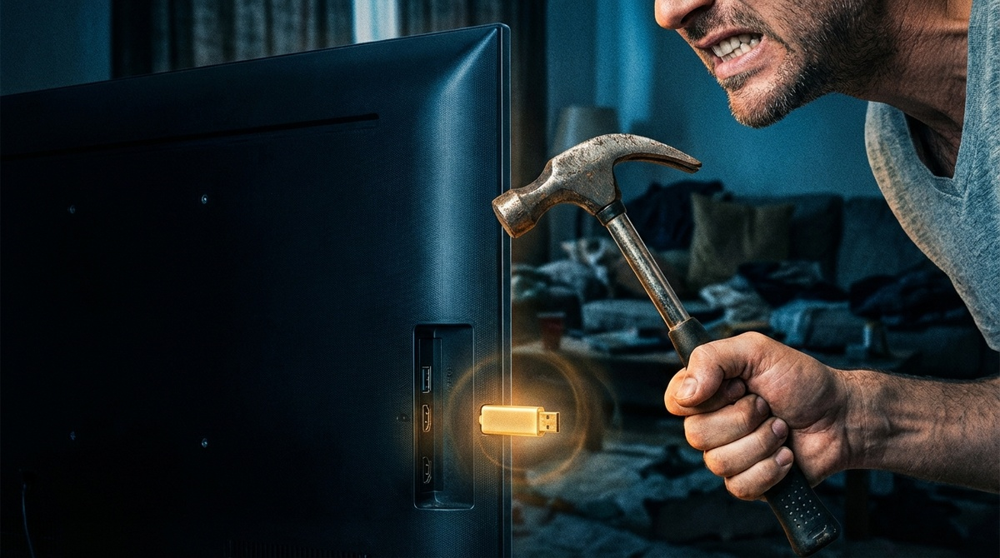
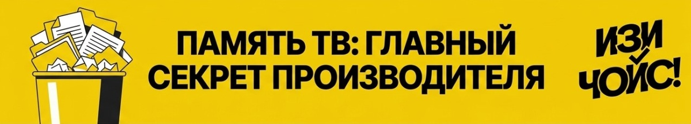
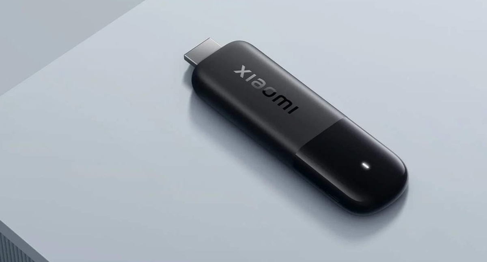
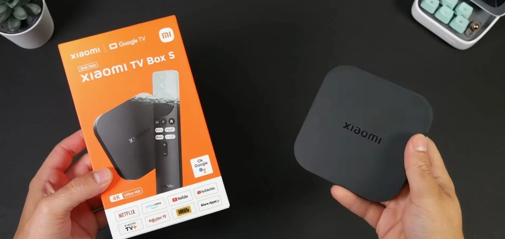
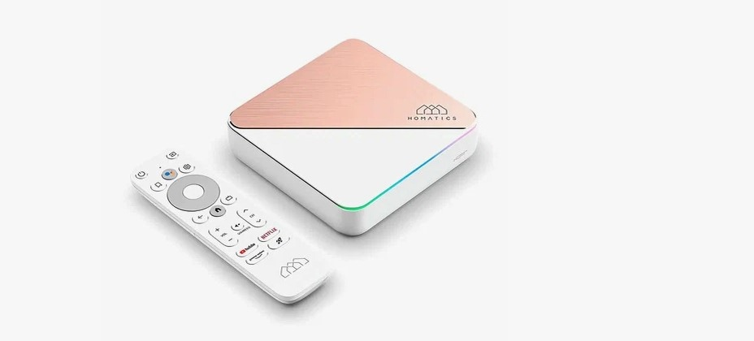
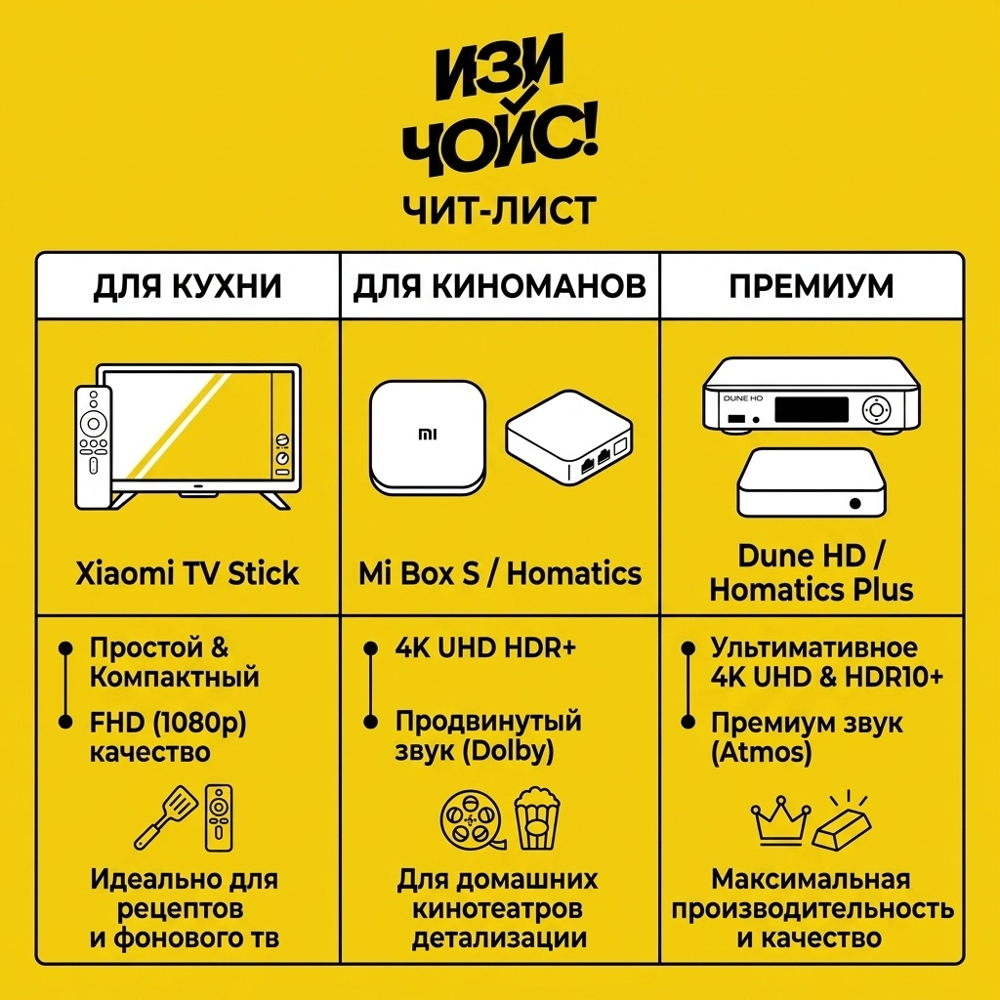

← На главную
Телевизор-тормоз. Зачем мы выбрасываем отличные экраны и как спасти Smart TV за копейки
Знакомая картина: вы включаете телевизор, чтобы посмотреть кино вечером, но он грузится мучительно долго, пульт откликается с задержкой, а приложения вылетают. Первая мысль — пора покупать новый телевизор. Но не спешите, проблема не в экране.

Нюанс №1: Подделка «Smart» в эконом-классе (до 40к)
Покупая недорогой телевизор, вы платите за матрицу (экран). Встроенный «умный» блок там собирается из самых дешевых компонентов. Это как поставить мотор от газонокосилки в автомобиль.
ИЗИ-правило: Матрица телевизора способна прослужить вам 10 лет, а вот встроенный процессор безнадежно устареет уже через 2-3 года.
Нюанс №2: Дефицит памяти, о котором молчит магазин
В большинстве телевизоров установлено всего 1-1.5 ГБ оперативной памяти и крошечный накопитель. Система обновляется, приложения тяжелеют, и свободное место просто заканчивается. Телевизор начинает «задыхаться».

ИЗИ-правило: Если телевизор начал тормозить, сброс до заводских настроек поможет лишь на месяц. Проблема аппаратная, а не программная.
Нюанс №3: Магическая «флешка» — TV-приставка
Выход прост: превратить ваш старый телевизор в обычный монитор, а всю «умную» работу переложить на внешнюю ТВ-приставку. Это стоит копейки по сравнению с покупкой нового телевизора.
Стратегии выбора: Конкретные модели на любой бюджет
Чтобы не путаться в характеристиках, мы подготовили три понятных сценария:
1. Бюджетный уровень (до 4 000 руб.)

Формат: «Свисток» (втыкается прямо в HDMI-порт, не занимает места).
- Для чего: YouTube, базовые кинотеатры (Кинопоиск, Иви).
- Плюс: Идеально для старых телевизоров на даче или кухне. Можно брать с собой в поездки.
2. Золотая середина (4 000 - 10 000 руб.)

Формат: Коробочка с хорошим охлаждением и портами.
- Для чего: Просмотр 4K контента, тяжелые приложения, стабильная работа без перегрева.
- Плюс: Больше памяти, есть порты для подключения флешек или даже кабеля интернета для стабильности.
3. Техно-Элита (от 10 000 руб.)

Формат: Премиальное устройство с мощным процессором (например, Apple TV 4K).
- Для чего: Максимальная плавность интерфейса, идеальная интеграция в экосистему умного дома, игры.
- Плюс: Прослужит очень долго без единого подтормаживания. Идеальный пульт.
Резюме и экспертный вывод «ИЗИ ЧОЙС!»
Не выбрасывайте хороший экран из-за слабого процессора. Подарите телевизору вторую жизнь.

Теги:
Обзор техники
Экономия бюджета
Умный дом
Гаджеты 2026
ТВ-приставки